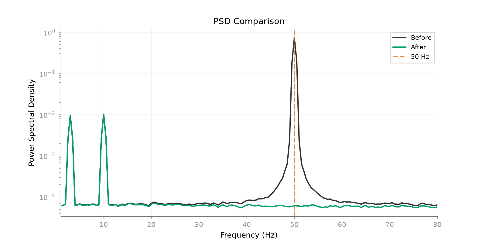
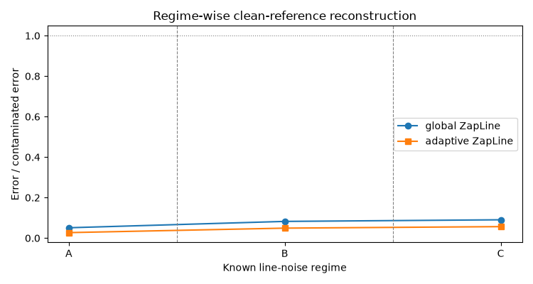

Note
Go to the end to download the full example code.
Adaptive ZapLine for changing line-noise statistics#
When line-noise frequency, strength, or spatial pattern changes over time, does adaptive ZapLine provide a better controlled reconstruction than one global ZapLine fit? Three known regimes make it possible to compare artifact recovery with a separate 10-Hz target-signal preservation endpoint.
ZapLine combines spectral and spatial filtering [1], while Zapline-plus motivates chunk-wise adaptation to changing frequency-specific noise statistics [2]. Adaptive processing is therefore an additional assumption about nonstationarity, not a universal replacement for a global fit.
References#
Construct a controlled three-regime recording#
import matplotlib.pyplot as plt
import numpy as np
from mne_denoise.qa import rms_change
from mne_denoise.viz import plot_psd_comparison
from mne_denoise.zapline import ZapLine
sfreq = 200.0
duration = 90.0
n_channels = 8
n_times = int(round(duration * sfreq))
times = np.arange(n_times) / sfreq
rng = np.random.default_rng(20260902)
# The clean substrate is one continuous background-plus-target process shared by
# all regimes. The 10-Hz component is a known signal-of-interest template.
channel_phases = rng.uniform(0.0, 2.0 * np.pi, n_channels)
background = 0.08 * rng.standard_normal((n_channels, n_times)) + 0.12 * np.sin(
2.0 * np.pi * 3.0 * times[None, :] + channel_phases[:, None]
)
target_pattern = rng.standard_normal(n_channels)
target_pattern /= np.linalg.norm(target_pattern)
target_wave = 0.35 * np.sin(2.0 * np.pi * 10.0 * times)
target_template = target_pattern[:, None] * target_wave[None, :]
clean_reference = background + target_template
# Use distinct, fixed spatial patterns to make the nonstationarity explicit.
topography_a = np.array([1.0, 0.8, 0.6, 0.4, 0.2, 0.1, 0.05, 0.02])
topography_b = topography_a[::-1].copy()
topography_c = np.array([1.0, -1.0, 1.0, -1.0, 1.0, -1.0, 1.0, -1.0])
topographies = (topography_a, topography_b, topography_c)
for topography in topographies:
topography /= np.linalg.norm(topography)
regimes = (
("A", 0.0, 30.0, 50.00, 4.0, topography_a),
("B", 30.0, 60.0, 50.05, 2.5, topography_b),
("C", 60.0, 90.0, 49.95, 3.0, topography_c),
)
line_artifact = np.zeros_like(clean_reference)
for name, start, stop, frequency, amplitude, topography in regimes:
interval = slice(int(start * sfreq), int(stop * sfreq))
envelope = np.ones(interval.stop - interval.start)
if name == "C":
# The final regime has a weaker baseline with stronger bursts and is
# spatially distinct.
local_times = times[interval]
envelope = 0.25 + 0.75 * (
((local_times >= 64.0) & (local_times < 72.0))
| ((local_times >= 78.0) & (local_times < 86.0))
)
source = amplitude * envelope * np.sin(2.0 * np.pi * frequency * times[interval])
line_artifact[:, interval] = topography[:, None] * source[None, :]
contaminated = clean_reference + line_artifact
Compare one global fit with the adaptive public estimator#
global_model = ZapLine(
sfreq=sfreq,
line_freq=50.0,
n_select="auto",
verbose=False,
)
global_clean = global_model.fit_transform(contaminated)
adaptive_model = ZapLine(
sfreq=sfreq,
line_freq=50.0,
adaptive=True,
verbose=False,
)
adaptive_clean = adaptive_model.fit_transform(contaminated)
Evaluate recovery by regime and preserve an independent target endpoint#
regime_labels = []
global_ratios = []
adaptive_ratios = []
print("Known-regime reconstruction errors:")
for name, start, stop, frequency, _amplitude, _topography in regimes:
interval = slice(int(start * sfreq), int(stop * sfreq))
contaminated_error = rms_change(
contaminated[:, interval], clean_reference[:, interval]
)
global_error = rms_change(global_clean[:, interval], clean_reference[:, interval])
adaptive_error = rms_change(
adaptive_clean[:, interval], clean_reference[:, interval]
)
global_ratio = global_error / contaminated_error
adaptive_ratio = adaptive_error / contaminated_error
regime_labels.append(name)
global_ratios.append(global_ratio)
adaptive_ratios.append(adaptive_ratio)
regime_target_template = target_template[:, interval]
regime_target_energy = np.sum(regime_target_template**2)
regime_reference_projection = (
np.sum(clean_reference[:, interval] * regime_target_template)
/ regime_target_energy
)
regime_global_projection = (
np.sum(global_clean[:, interval] * regime_target_template)
/ regime_target_energy
)
regime_adaptive_projection = (
np.sum(adaptive_clean[:, interval] * regime_target_template)
/ regime_target_energy
)
regime_global_gain = regime_global_projection / regime_reference_projection
regime_adaptive_gain = regime_adaptive_projection / regime_reference_projection
print(
f" Regime {name} ({start:.0f}-{stop:.0f} s, {frequency:.2f} Hz): "
f"contaminated error={contaminated_error:.4f}; "
f"global error={global_error:.4f}, residual ratio={global_ratio:.3f}; "
f"adaptive error={adaptive_error:.4f}, residual ratio={adaptive_ratio:.3f}"
)
print(
f" Regime {name} target gain — global / adaptive: "
f"{regime_global_gain:.3f} / {regime_adaptive_gain:.3f}"
)
# Project the known 10-Hz component, rather than treating lower 50-Hz power as
# evidence of preservation. Adaptive mode is transductive, so this uses the
# clean-reference reconstruction endpoint instead of a second transform call.
target_energy = np.sum(target_template**2)
reference_target_projection = np.sum(clean_reference * target_template) / target_energy
global_target_projection = np.sum(global_clean * target_template) / target_energy
adaptive_target_projection = np.sum(adaptive_clean * target_template) / target_energy
global_target_gain = global_target_projection / reference_target_projection
adaptive_target_gain = adaptive_target_projection / reference_target_projection
chunk_info = adaptive_model.adaptive_results_["chunk_info"]
reported_frequencies = sorted(
{
round(float(chunk["fine_freq"]), 2)
for chunk in chunk_info
if chunk.get("fine_freq") is not None
}
)
print(f"Global components removed: {global_model.n_removed_}")
print(
f"Adaptive segment/component passes: {len(chunk_info)} segments / "
f"{adaptive_model.n_removed_} component passes"
)
print(f"Adaptive reported segment frequencies (Hz): {reported_frequencies}")
print(f"10-Hz target-signal retention - global: {global_target_gain:.3f}")
print(f"10-Hz target-signal retention - adaptive: {adaptive_target_gain:.3f}")
Known-regime reconstruction errors:
Regime A (0-30 s, 50.00 Hz): contaminated error=1.0000; global error=0.0510, residual ratio=0.051; adaptive error=0.0270, residual ratio=0.027
Regime A target gain — global / adaptive: 0.934 / 0.998
Regime B (30-60 s, 50.05 Hz): contaminated error=0.6250; global error=0.0515, residual ratio=0.082; adaptive error=0.0307, residual ratio=0.049
Regime B target gain — global / adaptive: 0.936 / 0.978
Regime C (60-90 s, 49.95 Hz): contaminated error=0.5625; global error=0.0508, residual ratio=0.090; adaptive error=0.0318, residual ratio=0.057
Regime C target gain — global / adaptive: 0.931 / 0.989
Global components removed: 3
Adaptive segment/component passes: 3 segments / 3 component passes
Adaptive reported segment frequencies (Hz): [49.95, 50.0, 50.04]
10-Hz target-signal retention - global: 0.934
10-Hz target-signal retention - adaptive: 0.989
Inspect the adaptive spectrum#
plot_psd_comparison(
contaminated,
adaptive_clean,
sfreq=sfreq,
fmin=1.0,
fmax=80.0,
line_freq=50.0,
show=False,
)

<Figure size 1600x800 with 1 Axes>
Compare regime-wise reconstruction#
The public PSD helper cannot express a known-clean, regime-wise residual ratio, so this small custom plot shows that endpoint and the boundaries.
fig, ax = plt.subplots(figsize=(7.5, 4.0))
centers = np.array([15.0, 45.0, 75.0])
ax.plot(centers, global_ratios, "o-", label="global ZapLine")
ax.plot(centers, adaptive_ratios, "s-", label="adaptive ZapLine")
for boundary in (30.0, 60.0):
ax.axvline(boundary, color="0.5", linestyle="--", linewidth=0.8)
ax.axhline(1.0, color="0.5", linestyle=":", linewidth=0.8)
ax.set_xticks(centers)
ax.set_xticklabels(regime_labels)
ax.set_xlabel("Known line-noise regime")
ax.set_ylabel("Error / contaminated error")
ax.set_title("Regime-wise clean-reference reconstruction")
ax.legend()
fig.tight_layout()
